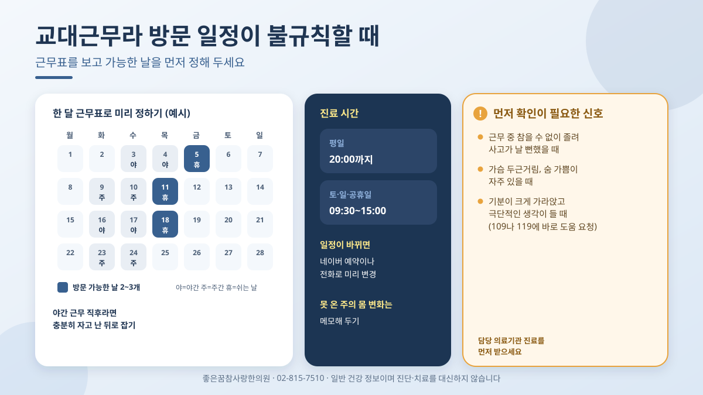

이종호 한의사 감수좋은꿈참사랑한의원 대표원장 (한의사 면허번호 19769)발행 2026-11-23 · 수정 2026-11-25
이 글의 차례
근무 일정이 불규칙하다면 한 달 근무표를 보고 방문할 수 있는 날을 두세 개 먼저 정해 두고, 바뀌면 예약을 미리 변경하는 방식이 가장 현실적입니다. 무리하게 맞추기보다 가능한 시간대를 파악해 두면 진료가 끊기지 않습니다. 좋은꿈참사랑한의원은 평일 20:00까지, 토·일·공휴일 09:30~15:00 진료해 근무 전후나 쉬는 날을 활용할 수 있습니다.
왜 교대근무에서 일정이 더 중요할까요
- 근무가 바뀌면 잠과 식사 시간이 함께 흔들려 몸의 리듬이 쉽게 무너집니다.
- 야간 근무 직후에는 몸이 많이 지쳐 있어 진료보다 휴식이 먼저일 수 있습니다.
- 방문 간격이 크게 벌어지면 그 사이 변화를 놓치기 쉬워 기록이 필요합니다.
- 같은 자세로 오래 일하는 근무라면 목과 허리 불편이 함께 쌓이기도 합니다.
- 근무가 바뀌는 주에는 피로가 몰려 통증이나 잠의 불편을 더 크게 느끼는 분이 많습니다.
먼저 이렇게 여쭙니다
- 근무 형태(주간, 야간, 교대)와 쉬는 날은 어떻게 되나요?
- 특히 몸이 힘든 시간대(근무 직후, 휴일 아침 등)는 언제인가요?
- 잠자는 시간은 얼마나 불규칙한가요?
- 근무 중 같은 자세로 오래 있는 편인가요?
- 근무가 바뀌는 주기는 며칠, 몇 주 단위인가요?
일상에서 먼저 해 볼 수 있는 것
- 한 달 근무표를 보고 방문 가능한 날을 두세 개 먼저 정하기
- 야간 근무 직후라면 충분히 자고 난 뒤의 시간으로 잡기
- 일정이 바뀌면 네이버 예약이나 전화로 미리 변경하기
- 방문하지 못한 주의 몸 변화를 메모해 두기
- 쉬는 날 첫날보다 둘째 날처럼 몸이 조금 회복된 날을 고르기
- 근무표가 나오는 날 바로 다음 방문일을 함께 잡아 두기
근무별로 이렇게 시간을 골라 보세요
- 주간 근무 주: 퇴근 뒤 평일 저녁 시간대(20:00 진료 마감 전 여유 있게)
- 오후·저녁 근무 주: 출근 전 오전 시간대(09:30부터)
- 야간 근무 주: 야간이 끝나고 충분히 잔 다음 날, 또는 야간 시작 전 날 오후
- 근무가 몰린 달: 토·일·공휴일 09:30~15:00 진료를 활용하고, 평일 점심시간 13:00~14:00은 피하기
어느 경우든 초진은 진찰 시간이 있어 재진보다 오래 걸릴 수 있으니, 첫 방문은 시간 여유가 있는 날로 잡아 주세요.
예를 들면 이런 경우입니다
- 예를 들어 3교대로 일하는 간호사라면, 야간 근무가 끝난 날 아침에 바로 오시기보다 낮잠을 충분히 자고 난 다음 날이나 오후 근무 전 오전 시간으로 잡는 편이 몸이 덜 지칩니다.
- 예를 들어 주말에도 일하고 평일 하루를 쉬는 매장 근무자라면, 쉬는 평일 오전이나 퇴근이 이른 날 저녁 시간대를 정해 두고, 바뀌면 그 주 안에서 다른 날로 옮기는 식으로 간격을 유지할 수 있습니다.
- 예를 들어 택배나 물류처럼 새벽이나 밤에 일하는 분이라면, 근무 시작 전 오후 시간대나 토·일 09:30~15:00 진료를 활용하고, 근무 직후의 허리 상태를 메모해 와 주시면 상담에 참고합니다.
한의원에서 함께 살필 수 있는 경우
- 근무 형태 때문에 식사와 잠이 불규칙하게 흔들릴 때 생활 흐름 전체를 함께 여쭙니다.
- 근무 중 같은 자세로 오래 있어 목과 허리가 불편할 때 자세와 함께 살핍니다.
- 교대 근무 뒤 잠이 얕고 피로가 쌓일 때 수면 리듬을 함께 봅니다.
좋은꿈참사랑한의원에서는 근무 형태와 쉬는 날을 먼저 여쭙고, 진맥을 기본으로 하고 필요하다고 판단될 때 설진을 더해 살핀 뒤 침이나 한약 상담 등을 정합니다. 방문 간격은 근무표에 맞춰 함께 정하고, 간격이 벌어진 사이의 변화를 다음 진료에서 이어서 확인합니다. 한약을 먹게 되면 근무별로 복용 시간을 어떻게 맞출지도 함께 정합니다.
자주 하는 오해
- 정해진 요일에 꼬박꼬박 못 오면 진료를 시작할 의미가 없다고 여기는 분도 있지만, 근무표에 맞춰 간격을 정하고 그사이 기록으로 이어 가는 방법이 있습니다.
- 야간 근무 직후 몸이 가장 아플 때 와야 정확히 볼 수 있다고 생각하기 쉬운데, 너무 지친 상태에서는 치료 중 어지럽기도 해 조금 쉬고 오시는 편이 편합니다.
- 예약을 자주 바꾸면 눈치가 보인다며 그냥 빠지는 분도 있는데, 미리 알려 주시면 다른 날로 이어 가기 쉬우니 편하게 변경해 주세요.
스스로 점검해 보세요
- 이번 달 근무표의 쉬는 날을 알고 있다
- 야간 근무 뒤 몇 시간을 자야 개운한지 대략 안다
- 근무가 바뀌는 주에 특히 목·허리나 잠이 불편하다
- 마지막 방문 뒤 2주 넘게 오지 못했다
- 근무 중 끼니를 거르거나 밤늦게 몰아서 먹는다
- 카페인 음료로 근무를 버티는 날이 많다
- 졸음 때문에 운전이나 작업 중 아찔했던 적이 있다
마지막 항목에 해당한다면 진료 일정보다 안전이 먼저이니 진료 시작 때 바로 말씀해 주세요.
이렇게 기록해 오시면 상담이 쉬워집니다
- 이번 달 근무표의 쉬는 날
- 근무별 잠든 시각과 일어난 시각
- 몸이 가장 힘들었던 날과 그 이유
- 복용 중인 약(수면제, 카페인 보충제 포함)
- 방문하지 못한 기간에 불편이 심해졌던 날과 그때의 근무
이런 증상은 먼저 확인이 필요합니다
- 근무 중 참을 수 없이 졸려 사고가 날 뻔한 경우
- 가슴 두근거림, 숨 가쁨이 자주 있는 경우
이런 신호가 있으면 한의원보다 가까운 병원이나 응급실을 먼저 찾으세요.
얼마나 지켜보고, 언제 확인하면 좋을까요
- 근무가 바뀐 뒤 사나흘 정도 잠이 흔들리는 것은 흔한 일이라, 그 기간의 잠든 시각과 깬 시각을 적으며 지켜보셔도 됩니다.
- 근무 패턴이 그대로인데도 2~3주 넘게 잠이 얕고 낮 피로가 이어진다면 다음 쉬는 날에 맞춰 상담을 잡아 보세요.
- 방문 간격이 3주 이상 벌어질 것 같다면 미리 전화로 알려 주시고, 그사이 불편이 심해진 날을 적어 두세요.
- 근무 중 졸음으로 위험했던 일이 한 번이라도 있었다면 기다리지 말고 담당 의료기관이나 직장 보건 담당과 먼저 상의하세요.
처음 오시면 이렇게 진행합니다
첫 방문에는 접수 때 기본 정보를 적고, 진료실에서 불편한 곳과 함께 근무 형태, 최근 일주일의 잠과 식사 시간을 여쭙니다. 이어서 진맥을 하고, 필요하다고 판단될 때 설진·복진을 더합니다. 오늘 받을 치료와 이유를 먼저 설명드린 뒤 진행하고, 끝나면 근무표를 기준으로 다음 방문 간격을 함께 정합니다.
원장별 진료 일정과 임시 휴진은 방문 전 전화(02-815-7510)로 확인해 주세요.
관련 글
- 야간 교대근무로 잠이 흐트러질 때 무엇을 먼저 정리하나요?
- 교대근무를 하면 식사 시간은 어떻게 잡나요?
- 야근이 잦아 한약 먹는 시간을 자꾸 놓칠 때는 어떻게 하나요?

여쭙는 것
- 근무 형태(주간, 야간, 교대)와 쉬는 날은 어떻게 되나요?
- 특히 몸이 힘든 시간대(근무 직후, 휴일 아침 등)는 언제인가요?
- 잠자는 시간은 얼마나 불규칙한가요?
생활에서 해 볼 것
- 한 달 근무표를 보고 방문 가능한 날을 두세 개 먼저 정하기
- 야간 근무 직후라면 충분히 자고 난 뒤의 시간으로 잡기
- 일정이 바뀌면 네이버 예약이나 전화로 미리 변경하기
한의원에서 함께 살필 것
- 근무 형태 때문에 식사와 잠이 불규칙하게 흔들릴 때 생활 흐름 전체를 함께 여쭙니다.
- 근무 중 같은 자세로 오래 있어 목과 허리가 불편할 때 자세와 함께 살핍니다.
- 교대 근무 뒤 잠이 얕고 피로가 쌓일 때 수면 리듬을 함께 봅니다.
먼저 확인이 필요한 신호
- 근무 중 참을 수 없이 졸려 사고가 날 뻔한 경우
- 가슴 두근거림, 숨 가쁨이 자주 있는 경우
한눈에 보는 표
| 구분 | 핵심 |
|---|---|
| 여쭙는 것 | 근무 형태(주간, 야간, 교대)와 쉬는 날은 어떻게 되나요? 특히 몸이 힘든 시간대(근무 직후, 휴일 아침 등)는 언제인가요? |
| 생활에서 해 볼 것 | 한 달 근무표를 보고 방문 가능한 날을 두세 개 먼저 정하기 야간 근무 직후라면 충분히 자고 난 뒤의 시간으로 잡기 |
| 한의원에서 함께 살필 것 | 근무 형태 때문에 식사와 잠이 불규칙하게 흔들릴 때 생활 흐름 전체를 함께 여쭙니다. 근무 중 같은 자세로 오래 있어 목과 허리가 불편할 때 자세와 함께 살핍니다. |
| 먼저 확인이 필요한 신호 | 근무 중 참을 수 없이 졸려 사고가 날 뻔한 경우 가슴 두근거림, 숨 가쁨이 자주 있는 경우 |
자주 묻는 질문
방문 간격이 벌어져도 되나요?
사정에 따라 간격이 달라질 수 있고, 지금 상태에 맞춰 상담으로 정합니다.
야간 근무 직후에 바로 가도 되나요?
몸이 많이 피곤하면 충분히 쉰 뒤에 방문하는 편이 편할 수 있어, 컨디션을 보며 정하시면 됩니다.
근무표를 보여 드려야 하나요?
필요하지 않으며 쉬는 날과 가능한 시간대만 알려 주셔도 됩니다.
주말에도 같은 원장에게 진료받을 수 있나요?
원장별 진료 일정이 다를 수 있어 방문 전 전화로 확인해 주세요. 다른 원장이 보더라도 이전 기록을 보고 이어서 진료합니다.
좋은꿈참사랑한의원은 재진 때 지난번 이야기부터 이어서 여쭙니다. 진료시간과 예약은 오시는 길에서 확인하세요.
어디서 상담받을 수 있나요?
좋은꿈참사랑한의원은 서울 동작구 만양로2길 2 신성빌딩 3층·5층(서울 동작구 상도동, 7호선 상도역 3번 출구 근처)에 있습니다. 한의사 3명(이종호 대표원장, 조영기 수석진료원장, 정원영 진료원장)이 진료합니다. 진료시간은 평일 09:30~20:00(점심 13:00~14:00), 토·일·공휴일 09:30~15:00이며, 방문 전 전화로 확인을 권합니다. 예약은 네이버 예약, 카카오톡 상담, 전화 02-815-7510로 받습니다.
이 글은 일반적인 건강 정보이며 개인의 진단이나 치료를 대신하지 않습니다. 증상이 있거나 복용 중인 약이 있다면 진료를 통해 확인하세요. 치료 효과는 개인마다 다를 수 있습니다.
작성 기준: 일반적으로 알려져 있는 건강 정보를 참고해 정리했습니다(대표원장 감수). 증상 기록은 1~2주 동안 하루 1회, 비슷한 시간에 적어 오시면 지난 상태와 비교하기 쉽습니다.